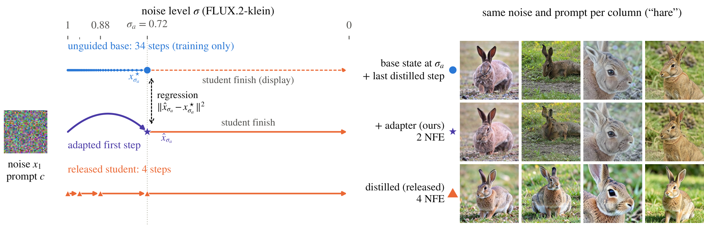

Fast and Useful: Adapting Distilled Generators for Visual Learning
Abstract
Distilled text-to-image models generate images quickly, but classifiers trained on those images can perform substantially worse than classifiers trained on images from their slower base models. We adapt released distilled generators to produce better training data while retaining fast generation. We fit a low-rank update to the student's first prediction so that it reaches an intermediate state produced by its unguided base, then disable the update and let the unchanged student finish generation. The base supplies training targets and is absent at inference. Guided targets and shorter jumps give classifiers lower accuracy in our ablations, showing why the state used for supervision matters. Across three generator families, the adapted images train better classifiers than images from the released students. With class-name templates at full ImageNet-1k scale, ResNet-50 top-1 rises from 8.4% to 34.2% for FLUX.2-klein and from 12.7% to 32.1% for SD-Turbo, using two and three denoiser evaluations per image, respectively. Fixed adapters also improve results on additional classes, fine-grained datasets, and other learner architectures and training recipes. Template-based adaptation remains useful against richer-prompt alternatives, while the benefit of combining adaptation with LLM generation prompts depends on the generator. Adapting a single generation step makes fast generators substantially more useful for training visual models.
One adapted prediction, then the released student
Guidance costs training value mostly in the first, high-noise steps, and handing a distilled model's early steps to its unguided base helps more than handing over late ones. We correct only the first prediction.
- Targets from the unguided base. For each prompt and starting noise, the base model runs without classifier-free guidance on a fine schedule, and we save its state at a chosen noise level σa.
- A low-rank update to the first prediction. With the released weights frozen, a rank-32 LoRA learns to jump from the noise straight to that saved state in one prediction.
- The released student finishes. At generation the adapter is active for the first prediction only; the unchanged student completes its own schedule. The base is not loaded.

Flow-matching form; SD-Turbo uses the matching Euler update in its scheduler's timestep. One-time preparation (targets and fitting): 5.7 H100-hours for klein, 0.9 for SD-Turbo.
| Released student | Base teacher | Jump endpoint | NFE, adapted | NFE, released |
|---|---|---|---|---|
| FLUX.2-klein | klein base | σ = 0.7175 | 2 | 4 |
| SD-Turbo | SD 2.1 | t = 499 | 3 | 4 |
| Z-Image-Turbo | Z-Image | σ = 0.8571 | 7 | 9 |
Adapted images train better classifiers
A ResNet-50 trained from scratch on generated images only, tested on real images. Across three generator families the adapter beats the released student and the base-first hybrid, which needs the base at generation. The much slower unguided base is shown for reference.
Accuracy without the slow base
The adapted samplers are as fast as the released students or faster, because the one adapted jump replaces several student steps. The unguided bases buy their extra accuracy with more generation time per image.
Fixed adapters transfer to fine-grained datasets
The adapters trained on ImageNet-100 class names are applied unchanged to Food-101, Stanford Cars and Oxford-IIIT Pets. They beat SDA, a public diversity LoRA for Z-Image-Turbo, and improve DP-DMD's released student.
The gains hold across learners
| Learner, trained from scratch | FLUX.2-klein | SD-Turbo | ||
|---|---|---|---|---|
| released | adapted | released | adapted | |
| ResNet-50 + RandAugment | 22.0 ± 0.3 | 46.7 ± 0.4 | 23.4 ± 0.7 | 48.0 ± 0.6 |
| Recipe of Adamkiewicz et al. | 17.9 ± 1.0 | 39.0 ± 0.3 | 21.7 ± 1.2 | 38.6 ± 0.5 |
| ConvNeXt-T | 19.9 ± 0.2 | 39.0 ± 0.2 | 20.7 ± 0.5 | 41.8 ± 1.4 |
| ViT-S/16 | 15.6 ± 0.1 | 26.9 ± 0.5 | 13.8 ± 0.4 | 26.8 ± 0.3 |
ImageNet-100 top-1 (%), mean ± SD over three classifier seeds, one adapter run, the same generated sets for every learner.
Where it helps, and where it does not
- The unguided base remains more accurate in most comparisons. At ImageNet-1k scale the adapters recover 90% of the unguided base's gain over the released student on klein (34.2 vs 37.2) and 62% on SD-Turbo (32.1 vs 44.1), in under a fifth and under a quarter of the base's time per image.
- Preparation is a one-time cost. It makes adaptation dearer than base-first sampling for small sets; counting it, adaptation becomes the cheaper option after about 399,000 images for klein and 807,000 for SD-Turbo, while giving higher accuracy throughout.
- Prompts matter. At ImageNet-1k with 100 images per class, the template-based adapter beats the released students prompted with LLM descriptions (+2.7 points for klein, +7.1 for SD-Turbo). Combined with LLM prompts, SD-Turbo's adapter still helps (+6.9), while klein's falls 1.5 points below its released student.
- A compatible base is required to build the targets, and the jump endpoint is chosen empirically per generator. We test classification and feature transfer; detection and segmentation remain untested.
Acknowledgments
This work was supported by the European Union through the EOSC-ARENA project (AI Research Enhancement through Networked Agents), Grant Agreement No. 101292597.
The authors thank Poznańskie Centrum Superkomputerowo-Sieciowe (PCSS) for providing the computational resources used in the experiments.
BibTeX
@misc{bartkowiak2026fastusefuladaptingdistilled,
title={Fast and Useful: Adapting Distilled Generators for Visual Learning},
author={Patryk Bartkowiak and Dominik Michels and Sören Pirk and Wojciech Pałubicki},
year={2026},
eprint={2610.32512},
archivePrefix={arXiv},
primaryClass={cs.CV},
url={https://arxiv.org/abs/2610.32512},
}